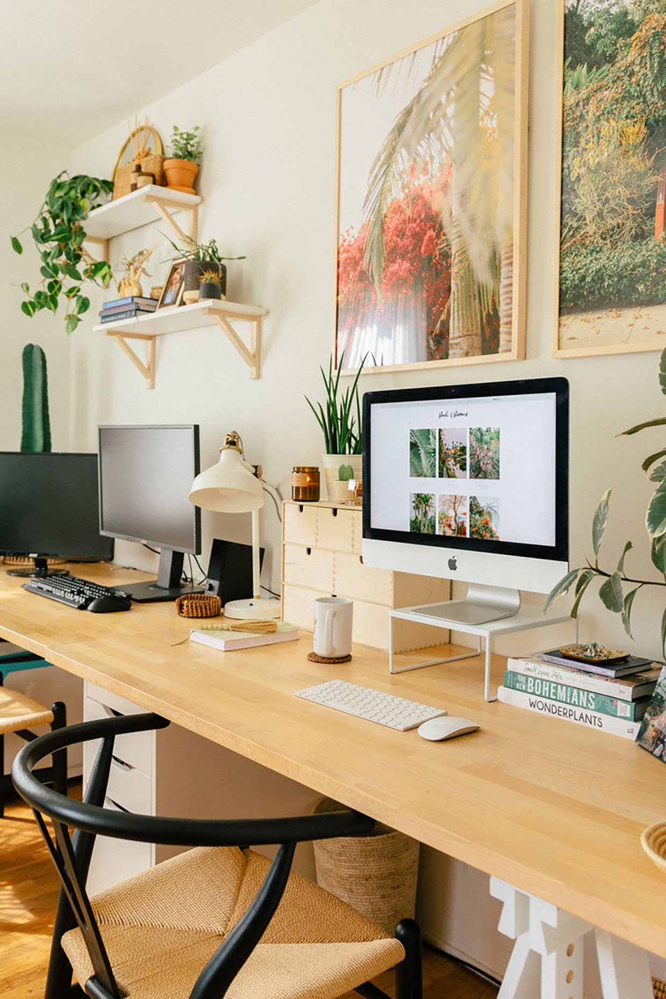
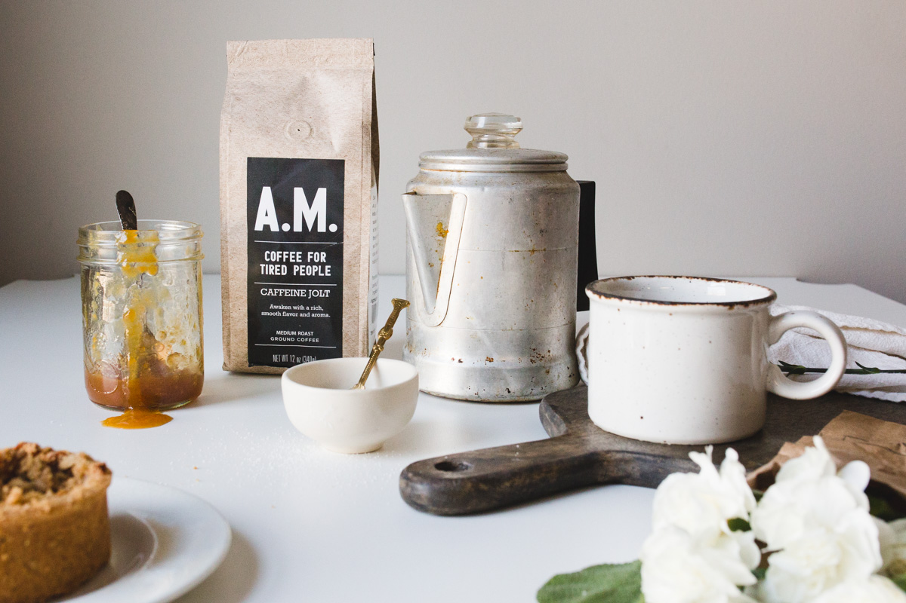
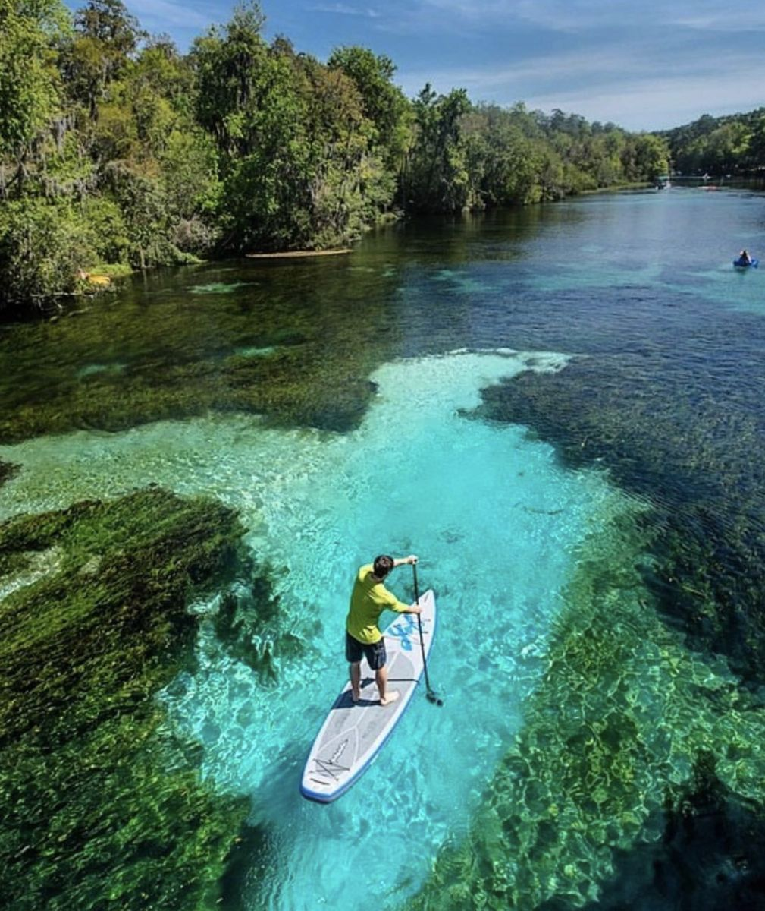

Beyond the Screen
I am a multidisciplinary professional and digital artisan who blends operational precision, strategic design, and full-stack technical training to bring complex projects to life. Whether I am optimizing workflows for high-performing teams, cultivating an intentional daily routine, or getting my hands dirty with tactile creative crafts, I bring a meticulous eye for detail and a grounded energy to everything I touch.
Explore the sections below to see how my professional history, lifestyle, and creative outlets shape the way I solve problems both on and off the screen.
Professional History

Throughout my career, I have thrived in fast-paced environments where
I could streamline chaotic workflows, build operational frameworks
from scratch, and manage high-value portfolios. I approach every
challenge with strategic precision, a natural ability to organize
logistics, and a meticulous eye for detail.
My extensive background in managing technical documentation and
operations forms the backbone of my current full-stack development
journey. Instead of learning to code in a vacuum, I bring real-world
business logic, structural discipline, and deep problem-solving
experience to every digital project I build.
- Enterprise Account Manager | Weedmaps
- Managed high-value enterprise portfolios, acting as a strategic partner to optimize digital campaigns and align platform solutions with complex business goals.
- Technical Support Specialist II | Samsara
- Delivered multi-channel technical support and authored robust technical documentation to resolve intricate hardware and software issues.
- Implementation Specialist | Amplify
- Spearheaded operations coordination, built workflows, and managed bulk shipment logistics to ensure seamless, accurate product deployment.
Lifestyle

For me, a well-built life requires the same attention to detail as a
well-built application. I place a high value on cultivating
intentional daily routines and structured systems that keep me
grounded, healthy, and focused. By maintaining a clear work-life
balance, I ensure that I bring my absolute best, most energized self
to the projects and teams I work with every day.
Whether I am starting my morning with a freshly brewed cup of
specialty whole-bean coffee or keeping myself accountable through
daily tracking, structure is my anchor. I treat my personal wellness
and environment with the same meticulous organization that I bring to
technical workflows, turning daily habits into a foundation for
continuous personal growth.
- Specialty Coffee & Morning Focus | The Daily Kickoff
- Curating a focused morning routine centered around brewing high-quality, specialty flavored whole-bean coffee to set a sharp, intentional tone for the day.
- Nutrition & Caloric Tracking | Structured Wellness
- Maintaining a disciplined meal-prepping and calorie-tracking program, exploring creative recipes across Mediterranean and vegan food blogs.
- Balanced Ecosystems | A Grounded Environment
- Creating a harmonious household routine centered around a shared living space, a close-knit family environment, and caring for my two Labradors, Brax and Marine.
Hobbies

When I step away from the screen, my time is dedicated to exploration,
hands-on creating, and immersive storytelling. I believe that a sharp
mind thrives on variety, and my hobbies allow me to flex different
creative muscles. Whether I am interacting with physical materials or
exploring massive digital worlds, I love the process of learning new
skills and pushing my creative boundaries.
My free time is
a balance between the tranquility of nature and the excitement of
design and gaming. These creative outlets keep me inspired and give me
a fresh perspective that I carry right back into my technical and
professional projects.
- On the Water
- Finding balance on the open water through boating, fishing, paddleboarding, and swimming. There is nothing better than the peace and focus that comes with being out on the water.
- Creating & Crafting
- Bringing ideas to life by bridging the gap between digital design and tangible projects—ranging from tattooing and sewing to building physical objects from scratch.
- Immersive Gaming
- Diving into rich, complex worlds through digital gaming, with a particular love for deeply immersive single-player RPGs and fast-paced first-person shooters like Call of Duty.